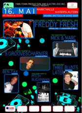
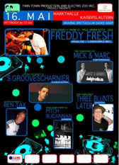

Freddy Fresh in der Markthalle
Electro Zoo präsentiert am Mittwoch Freddy Fresh from Minnesota in der Markthalle. Mit dabei sind auch: S. Groovesharnier, Mick & Marc, Three Blunts Later, Pitch Bucannan & Ben Tax
Beginn: 22.00 Uhr, Markthalle
Electro Zoo präsentiert am Mittwoch Freddy Fresh from Minnesota in der Markthalle. Mit dabei sind auch: S. Groovesharnier, Mick & Marc, Three Blunts Later, Pitch Bucannan & Ben Tax
Beginn: 22.00 Uhr, Markthalle
 Am Freitag heissts “Zauberwald” bei umgekramt im Kramladen der TU Kaiserslautern.
Am Freitag heissts “Zauberwald” bei umgekramt im Kramladen der TU Kaiserslautern.
Beginn ab 21.00 Uhr, Eintritt 2 EUR
http://www.umgekramt.de/
 Zum kommenden Vatertag am Donnerstag findet am Vogelwoog ein Mini Folk- und Bluesfestival statt. Mit dabei sind:
Zum kommenden Vatertag am Donnerstag findet am Vogelwoog ein Mini Folk- und Bluesfestival statt. Mit dabei sind:
Pop Properly – Australien Folk-Rock at it’s best sowie SAVANNAH BLUES BAND
Beginn:15.00 Uhr
Am Mittwoch Vormittag zeigt das Union Kino die Virtual Design Studienarbeiten von Studenten der Fachhochschule Kaiserslautern.
Eintritt frei!
Beginn: 11.30Uhr
Endlich – das Warmfreibad eröffnet die Saison 2007! Auf ins kühle Nass. Leider macht die Waschmühle wegen Umbauarbeiten erst zum 2. Juni auf.
Tipp: Studenten bekommen 50% Rabatt – auch auf die Sportkarte, welche für beide Bäder gilt.
Weitere Infos:
http://www.kaiserslautern.de/leben_in_kl/freizeit_und_sport/schwimmbaeder/
 Die Fachhochschule Kaiserslautern und ihr Freundeskreis laden zu einer Aufführung der Dreigroschenoper von Bertold Brecht und Kurt Weill als Pilotprojekt der Charta-Hochschulen ein. Die 1928 uraufgeführte Dreigroschenoper gehört, nicht zuletzt wegen der Popularität ihrer Songs, zu den bekanntesten und meistgespielten Werken Brechts. Quelle: KL Website
Die Fachhochschule Kaiserslautern und ihr Freundeskreis laden zu einer Aufführung der Dreigroschenoper von Bertold Brecht und Kurt Weill als Pilotprojekt der Charta-Hochschulen ein. Die 1928 uraufgeführte Dreigroschenoper gehört, nicht zuletzt wegen der Popularität ihrer Songs, zu den bekanntesten und meistgespielten Werken Brechts. Quelle: KL Website
Beginn: 20.00 Uhr, Jean-Schoen Halle (Gartenschau Gelände)
Eintritt: 7 EUR
http://www.kaiserslautern.de/service/veranstaltungen/01357/index.html?lang=de
Mitmachen & weitersagen: am Dienstag findet ein G8 Die-In FlashMob in der Innenstadt statt. Los geht’s pünktlich um 18.25 Uhr in der Fussgängerzone, Marktstraße, Ecke San Marco / Peek&Clockenburg. Plötzlich ‘Tot’ umfallen, über Schild und andere Gegenstände auf die Totesursache aufmerksam machen.
Alles weitere im Flashmob Blog:
http://flashmob.twoday.net/stories/3701051/
und hier:
http://www.klgegeng8.de/index.php?n=Main.DieIn
Gerade waren an meiner ‘Haustür’ drei Jugendliche die vorgaben ehemalige Drogenabhänige zu sein. Nach einer kleinen (pseudo) Befragung ging’s dann auch gleich zum Geschäft: (stark verkürzt aufs Wesentliche) ‘Willst du nicht ein ABO eines (namhaften) Magazins aus Überproduktion kaufen? Der Erlös geht 100% an mich. Hier der Vertrag – unterschreiben!’ Der Vertag lief auf den Namen von Wagner Verlagswerbung in Rothenberg. Ich bin zum Glück nicht darauf eingegangen, denn was ich jetzt hier im Forum gelesen habe ist echt nicht mehr schön. Also seid gewarnt! Hat jemand ähnliche Begegnungen gehabt?
UPDATE:sehr gute FAQs gibt’s hier:
http://home.arcor.de/vsr-faq/
Heute (Donnerstag, 10. 5) gibt es wieder kostenlos Unicum Wundertüten in der Mensa. Also Beeilung + Abstauben. Ach, und zum Essen gibt’s:
Gelb(1): Glbe/grüne Tagliatelle mit Käse-Sahnesoße, Rucula + Tomaten
Grün(2): SchniPoSa
Wok: Frischer Pfannkuchen mit Sauerkirschen
Grill: Ribsteak von Schweinehackfleisch mit Barbecuesoße und Pommes-Chips
http://wundertuete.unicum.de
 Am Samtstag heissts beim Beatclub: Move against G8 – Reggae & Dancehall Night
Am Samtstag heissts beim Beatclub: Move against G8 – Reggae & Dancehall Night
JAMROCK HIFI (Heidelberg)
Reggae Bash (Stuttgart)
Fat Elephant Soundsystem (KiBo)
Kramladen / Uni Kaiserslautern (Bau46), Einlass: 22Uhr / Soli-Eintritt: 4.-
Quelle: http://www.beatclub-kl.de